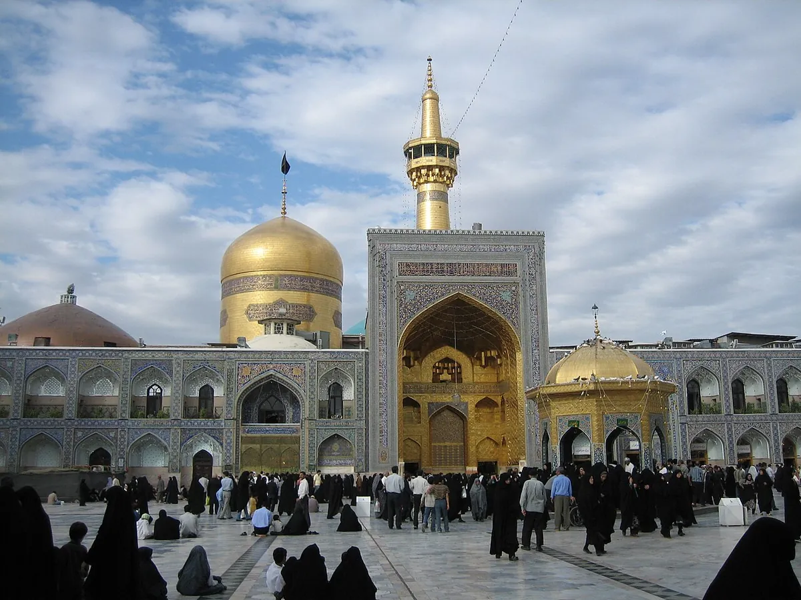

دليل الزائر العربي · ar-SA
من الكويت والبحرين والخليج إلى مشهد المقدسة: دليل عملي للزائر

سواء كنت تخطط للزيارة من الكويت أو البحرين أو عُمان أو قطر أو الإمارات أو السعودية، فإن أفضل بداية هي التحقق من شروط السفر الخاصة بجنسيتك، ثم تنظيم الإقامة والتنقل والميزانية قبل تأكيد أي حجز. هذا الدليل عملي واسترشادي؛ التفاصيل الرسمية تُراجع بتاريخ رحلتك.
خلاصة التخطيط
حدّد بلد المغادرة وعدد المسافرين وموعد تقريبي، راجع متطلبات الدخول من مصادر رسمية، قارن خيارات الطيران والإقامة قرب الحرم، وضع ميزانية تشمل النقل والطعام والاحتياط. عند الحاجة إلى تنسيق محلي في مشهد، يمكن التواصل مع حسين عبر واتساب قبل الالتزام.
الرحلات من دول الخليج إلى مشهد
تختلف الخيارات حسب المدينة وشركة الطيران والتاريخ. بعض الرحلات مباشرة وبعضها يتوقف في مدن إيرانية أو إقليمية. راجع دائماً جداول الناقلين والمطارات مباشرة قبل الدفع، ووزن الأمتعة وشروط التغيير، ووقت الوصول إلى مطار مشهد. بعد الهبوط خطّط للانتقال عبر دليل من مطار مشهد إلى الحرم.
متطلبات الدخول للزائر الخليجي
قد تختلف الإجراءات بحسب الجنسية ونوع جواز السفر وتاريخ الرحلة. ابدأ من صفحة تأشيرة إيران للزائر العربي كدليل تخطيطي، ثم اعتمد على الجهات الرسمية. حسين لا يصدر تأشيرات ولا يعد بنتائج طلبات رسمية.
الإقامة قرب حرم الإمام الرضا
الزائر الخليجي غالباً يفضّل القرب من الحرم. قبل الحجز قارن المسافة العملية وعدد الغرف وسياسة الإلغاء والسعر النهائي. راجع فنادق قرب الحرم. لا تُعرض أسعار ثابتة على أنها حالية.
الميزانية وبرنامج الزيارة
ضع في حسابك التذاكر والإقامة والنقل والطعام والاتصالات ومبلغاً احتياطياً. راجع كم تكلف رحلة مشهد وبرنامج 3 أيام ودليل زيارة الحرم.
من كل دولة — نقاط سريعة
- الكويت والبحرين: راقب الرحلات المباشرة أو بتوقف قصير، ووقت الوصول المسائي.
- قطر والإمارات: قارن شركات الطيران وشروط الأمتعة للعائلات.
- عُمان والسعودية: راجع متطلبات الدخول الخاصة بجنسيتك من مصدر رسمي قبل الدفع.
هل تحتاج تنسيقاً محلياً؟
أرسل عبر واتساب: بلد المغادرة، الموعد التقريبي، عدد المسافرين، واحتياج الإقامة أو التنقل. يُوضح النطاق والسعر كتابةً قبل أي اتفاق. تعرّف على حسين والخدمات.
تفاصيل عملية بعد الوصول
راجع التنقل داخل مشهد وشريحة الاتصال والعملة والدفع والطعام والتسوق لتفادي المفاجآت في الأيام الأولى.
أسئلة شائعة
هل الرحلات من الكويت والبحرين إلى مشهد مباشرة دائماً؟
ليس دائماً. الخيارات تتغير حسب الموسم والناقل. راجع جداول الطيران الرسمية قبل الحجز.
هل يحتاج الزائر الخليجي تأشيرة إلى إيران؟
يعتمد على الجنسية وتاريخ السفر. تحقق من المصادر الرسمية قبل شراء تذاكر غير قابلة للاسترداد.
أين الأفضل الإقامة للزائر من الخليج؟
كثير من الزوار يفضّلون القرب من الحرم. قارن المسافة والخدمات وسياسة الإلغاء. راجع دليل فنادق قرب الحرم.
هل يمكن ترتيب الاستقبال من المطار؟
نعم ضمن نطاق متفق عليه مسبقاً. أرسل تفاصيل الوصول عبر واتساب ليُؤكد التوفر والسعر كتابةً.